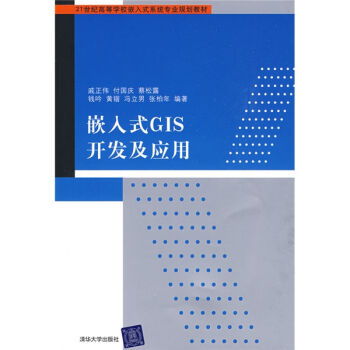
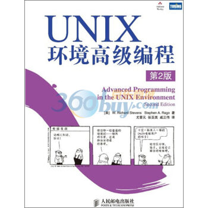
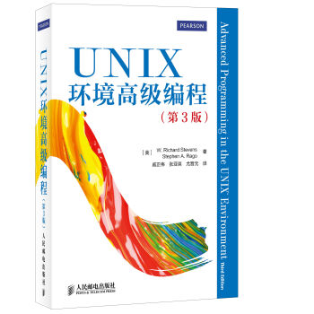

Publications
Conferences
2015
- Haihang Zhou, Jianguo Yao, Haibing Guan and Xue Liu, Comprehensive Understanding of Operation Cost Reduction Using Energy Storage for IDCs, in Proceedings of IEEE Conference on Computer Communications (INFOCOM’2015), Hong Kong, China, 2015. (Acceptance ratio=19%)
- Shuxin Cheng, Jianguo Yao and Fei Hu, Optimizing Network I/O Performance Through Adaptive Hypercall Coalescing in Embedded Virtualization, in Proceedings of the 30th ACM/SIGAPP Symposium On Applied Computing (SAC 2015), Salamanca, Spain, 2015.
- Haiyang Sun，Yudi Zheng，Lubomır Bulej，Alex Villazon，Zhengwei Qi， et al. A Programming Model and Framework for Comprehensive Dynamic Analysis on Android. MODULARITY 2015.
2014
- Xinni Ge, Zhengwei Qi and Ken Chen, et al. Loose-coupled Benchmark Framework Automates Performance Modeling on IaaS Clouds. UCC 2014
- Bo Liu, Zhengwei Qi, Bin Wang, Ruhui Ma, et al. Pinso: Precise Isolation of Concurrency Bugs via Delta Triaging. ICSME 2014.
- Yao Li, Antonio Roldao Lopes, Zhouyun Xu, Zhengwei Qi and Haibing Guan. ScalaHDL: Express and Test Hardware Designs in a Scala DSL. ICCD 2014
- Lei Rao and Jianguo Yao, SmartCar: Smart Charging and Driving Control for Electric Vehicles in the Smart Grid. IEEE GLOBECOM 2014
- Augustin Jouy, Jianguo Yao and Guchuan Zhu. Optimal Bandwidth Allocation with Dynamic Multi-Path Routing for Non-Critical Traffic in AFDX Networks. ICPADS 2014.
2013
- Miao Yu, Chao Zhang, Zhengwei Qi, Jianguo Yao, Yin Wang, and Haibing Guan,. VGRIS:Virtualized GPU resource isolation and scheduling in cloud gaming. in Proceedings of the ACM International Symposium on High Performance Distributed Computing (HPDC), 2013. Accepted.
- Bin Wang, Zhengwei Qi, Haibing Guan, Haoliang Dong, Wei Sun, and Yaozu Dong. kMemvisor: flexible system wide memory mirroring in virtual environments. in Proceedings of the ACM International Symposium on High Performance Distributed Computing (HPDC), 2013. Accepted.
- Aibek Sarimbekov, Yudi Zheng, Danilo Ansaloni, Lubomír Bulej, Lukás Marek, Walter Binder, Petr Tuma, Zhengwei Qi:Productive Development of Dynamic Program Analysis Tools with DiSL. Australian Software Engineering Conference 2013: 11-19
- Lukás Marek, Yudi Zheng, Danilo Ansaloni, Lubomír Bulej, Aibek Sarimbekov, Walter Binder, Zhengwei Qi: Introduction to dynamic program analysis with DiSL. ICPE 2013: 429-430
- Aibek Sarimbekov, Yudi Zheng, Danilo Ansaloni, Lubomir Bulej, Lukás Marek, Walter Binder, Petr Tuma and Zhengwei Qi: Java Bytecode Instrumentation – Reconciling Developer Productivity. Accepted by BYTECODE 2013
- Aibek Sarimbekov�, Yudi Zheng�, Danilo Ansaloni�, Lubom´ır Bulejy, Lukas Mareky,Walter Binder�, Petr Tumay, Zhengwei Qi: Productive Development of Dynamic Program Analysis Tools with DiSL. ASWEC 2013
2012
- Junqing Wang, Miao Yu, Bingyu Li, Zhengwei Qi and Haibing Guan. Hypervisor-based Protection of Sensitive Files in a Compromised System. ACM Symposium on Applied Computing – SAC, 2012, Italy
- Lukás Marek, Alex Villazón, Yudi Zheng, Danilo Ansaloni, Walter Binder, Zhengwei Qi: DiSL: a domain-specific language for bytecode instrumentation.AOSD 2012: 239-250
- Yudi Zheng, Danilo Ansaloni, Lukás Marek, Andreas Sewe, Walter Binder, Alex Villazón, Petr Tuma, Zhengwei Qi, Mira Mezini: Turbo DiSL: Partial Evaluation for High-Level Bytecode Instrumentation. TOOLS (50) 2012: 353-368
- Haoliang Dong, Wei Sun, Bin Wang, Haiyang Sun, Zhengwei Qi, Haibing Guan: Memvisor: Application Level Memory Mirroring via Binary Translation. Cluster 2012(Poster)
- Danilo Ansaloni, Walter Binder, Christoph Bockisch, Eric Bodden, Kardelen Hatun, Lukás Marek, Zhengwei Qi, Aibek Sarimbekov, Andreas Sewe, Petr Tuma, Yudi Zheng: Challenges for Refinement and Composition of Instrumentations: Position Paper.Software Composition 2012: 86-96
- Yongqiang Gao Zhengwei Qi, Liang Liu and Haibing Guan.SLA-based Energy-Efficient Resource Management in Cloud Data Centers. FCST 2012
2011
- Miao Yu, Qian Lin, Bingyu Li, Zhengwei Qi, Haibing Guan. Vis: Virtualization Enhanced Live Acquisition for Native System. The 2nd ACM SIGOPS Asia-Pacific Workshop on Systems (APSys 2011), Shanghai, China, July 11-12 2011.
- Yongqiang Gao, Zhengwei Qi, Yubin Wu, Rui Wang, Liang Liu, Jitao Xu, Haibing Guan: A Power and Performance Management Framework for Virtualized Server Clusters. GreenCom 2011: 170-175
- Ruoyu Zhang, Shiqiu Huang, Zhengwei Qi, Haibing Guan: Combining Static and Dynamic Analysis to Discover Software Vulnerabilities. IMIS 2011: 175-181
- Min Zhu, Miao Yu, Mingyuan Xia, Bingyu Li, Peijie Yu, Shang Gao, Zhengwei Qi, Liang Liu, Ying Chen, Haibing Guan: VASP: virtualization assisted security monitor for cross-platform protection. SAC 2011: 554-559
- Jun Nakajima, Qian Lin, Sheng Yang, Min Zhu, Shang Gao, Mingyuan Xia, Peijie Yu, Yaozu Dong, Zhengwei Qi, Kai Chen, Haibing Guan: Optimizing virtual machines using hybrid virtualization. SAC 2011: 573-578
- Qian Lin, Mingyuan Xia, Miao Yu, Peijie Yu, Min Zhu, Shang Gao, Zhengwei Qi, Kai Chen, Haibing Guan: SPAD: software protection through anti-debugging using hardware virtualization. SAC 2011: 623-624
2010
- Peijie Yu, Mingyuan Xia, Qian Lin, Min Zhu, Shang Gao, Zhengwei Qi, Kai Chen, Haibing Guan: Real-time Enhancement for Xen Hypervisor. EUC 2010: 23-30
- Mingyuan Xia, Miao Yu, Qian Lin, Zhengwei Qi, Haibing Guan: Enhanced Privilege Separation for Commodity Software on Virtualized Platform. ICPADS 2010: 275-282
- Gengbiao Chen, Zhuo Wang, Ruoyu Zhang, Kan Zhou, Shiqiu Huang, Kangqi Ni, Zhengwei Qi, Kai Chen, Haibing Guan: A Refined Decompiler to Generate C Code with High Readability. WCRE 2010: 150-154
- Kan Zhou, Shiqiu Huang, Zhengwei Qi, Jian Gu, Beijun Shen: Enhance Information Flow Tracking with Function Recognition. e-Forensics 2010: 179-184
Journals
- Zhengwei Qi, Jianguo Yao, Chao Zhang, Miao Yu, Zhizhou Yang, Haibing Guan: VGRIS: Virtualized GPU Resource Isolation and Scheduling in Cloud Gaming. TACO 11(2): 17 (2014)
- Chao Zhang, Jianguo Yao, Zhengwei Qi, Miao Yu, Haibing Guan: vGASA: Adaptive Scheduling Algorithm of Virtualized GPU Resource in Cloud Gaming. IEEE Trans. Parallel Distrib. Syst. 25(11): 3036-3045 (2014)
- Jianguo Yao, Giuseppe Tommaso Costanzo, Guchuan Zhu and Bin Wen, “Power Admission Control with Predictive Thermal Management in Smart Buildings”, IEEE Transactions on Industrial Electronics, 2014.
- Jianguo Yao, Haibing Guan, Jianying Luo, Lei Rao and Xue Liu, Adaptive Power Management Through Thermal Aware Workload Balancing in Internet Data Centers, IEEE Transactions on Parallel and Distributed Systems, 2014
- Haibing Guan, Jianguo Yao, Zhengwei Qi and Runze Wang, Energy-Efficient SLA Guarantees for Virtualized GPU in Cloud Gaming, IEEE Transactions on Parallel and Distributed Systems, 2014.
- Jianguo Yao, Haihang Zhou, Jianying Luo, Xue Liu and Haibing Guan, COMIC: Cost Optimization for Internet Content Multihoming, IEEE Transactions on Parallel and Distributed Systems, 2014
- A. Sarimbekov, Y. Zheng, D. Ansaloni, L. Bulej, L. Marek, W. Binder, P. Tuma, and Z. Qi. Dynamic Program Analysis – Reconciling Developer Productivity and Tool Performance. Science of Computer Programming, 2014; accepted.
- Yongqiang Gao, Haibing Guan, Zhengwei Qi, Yang Hou, Liang Liu: A multi-objective ant colony system algorithm for virtual machine placement in cloud computing. J. Comput. Syst. Sci. 79(8): 1230-1242 (2013)
- Yongqiang Gao, Haibing Guan, Zhengwei Qi, Bin Wang, Liang Liu: Quality of service aware power management for virtualized data centers. Journal of Systems Architecture – Embedded Systems Design 59(4-5): 245-259 (2013).
- Qian Lin, Zhengwei Qi, Jiewei Wu, Yaozu Dong, Haibing Guan: Optimizing Virtual Machines Using Hybrid Virtualization. Accepted by Journal of Systems and Software.
- Gengbiao Chen, Zhengwei Qi, Shiqiu Huang, Kangqi Ni, Yudi Zheng, Walter Binder and Haibing Guan: A refined decompiler to generate C code with high readability. Accepted by Software: Practice and Experience.
- Ruoyu Zhang, Shiqiu Huang, Zhengwei Qi, Haibing Guan: Static program analysis assisted dynamic taint tracking for software vulnerability discovery. Computers & Mathematics with Applications 63(2): 469-480 (2012)
- Miao Yu, Zhengwei Qi, Qian Lin, Xianming Zhong, Bingyu Li, Haibing Guan. Vis: Virtualization Enhanced Live Forensics Acquisition for Native System. Digital Investigations, 9(1): 22-33 (2012)
- Yongqiang Gao, Haibing Guan; Zhengwei Qi, Bin Wang: An Ant Colony System Algorithm for The Problem of Server Consolidation in Virtualized Data Centers. Journal of Computational Information Systems，accepted in 2012.
- Zhengwei Qi, Bingyu Li, Qian Lin, Miao Yu, Mingyuan Xia, Haibing Guan: SPAD: Software Protection Through Anti-Debugging Using Hardware-Assisted Virtualization.J. Inf. Sci. Eng. 28(5): 813-827 (2012)
- Haibing Guan, Bo Liu, Zhengwei Qi, Yindong Yang, Hongbo Yang, Alei Liang: CoDBT: A multi-source dynamic binary translator using hardware-software collaborative techniques. Journal of Systems Architecture – Embedded Systems Design 56(10): 500-508 (2010)
Technical Reports and Other Publications：
- Trusted Computing 可信计算
- Program Analysis 程序分析
- Green Computing 绿色计算
Books
NewBluePill：深入理解硬件虚拟机 ￥29.00 购买
本书是国内外第一本基于源代码详细分析intel和amd硬件虚拟化实现细节的书籍。首先串讲newbluepill的启动、运行和卸载场景，之后详细讲解newbluepill的各个组成模块。重点在于引导读者去探索newbluepill及硬件虚拟化，可以作为高校计算机相关专业师生参考读物，也可以作为硬件虚拟化技术从业人员的参考资料。

嵌入式GIS开发及应用 ￥19.00 购买
本书在综合考察和分析GIS发展现状的基础上，详细介绍了嵌入式GIS系统的设计与实现，内容几乎涉及了一个完整的嵌入式GIS系统的各个方面，包括典型嵌入式GIS系统的架构、GPS信号的接收与解析、矢量地图格式的设计原则、地图制作工具及地图引擎的设计与实现、GUI界面设计及导航地图显示、地图匹配算法、路径导航算法、服务器端详细设计、GPRS网络通信模块设计等。《嵌入式GIS开发及应用》既可作为高等院校GIS、嵌入式软件、测绘等相关专业的本科生或研究生教材，也可供公司、科研机构及事业单位在开发嵌入式GIS系统时参考使用。

UNIX环境高级编程（第2版) ￥68.00 购买
本书是被誉为UNIX编程“圣经”的Advanced Programming in the UNIX Environment一书的更新版。在本书第1版出版后的十几年中，UNIX行业已经有了巨大的变化，特别是影响UNIX编程接口的有关标准变化很大。本书在保持了前一版的风格的基础上，根据最新的标准对内容进行了修订和增补，反映了最新的技术发展。书中除了介绍UNIX文件和目录、标准I/O库、系统数据文件和信息、进程环境、进程控制、进程关系、信号、线程、线程控制、守护进程、各种I/O、进程间通信、网络IPC、伪终端等方面的内容，还在此基础上介绍了多个应用示例，包括如何创建数据库函数库以及如何与网络打印机通信等。此外，还在附录中给出了函数原型和部分习题的答案。
本书内容权威，概念清晰，阐述精辟，对于所有层次UNIX程序员都是一本不可或缺的参考书。

UNIX环境高级编程（第3版）购买
20多年来，严谨的C程序员都是依靠一本书来深入了解驱动UNIX和Linux内核的编程接口的实用知识的，这本书就是W. Richard Stevens所著的《UNIX高级环境编程》。现在，Stevens的同事Steve Rago彻底更新了这本经典著作。新的第3版支持当今领先的系统平台，反映了最新技术进展和最佳实践，并且符合最新的Single UNIX Specification第4版（SUSv4）。
Rago保留了使本书前版成为经典之作的精髓和方法。他在Stevens原著的基础上，从基础的文件、目录和进程讲起，并给诸如信号处理和终端I/O之类的先进技术保留较大的篇幅。他还深入讨论了线程和多线程编程、使用套接字接口驱动进程间通信（IPC）等方面的内容。
这一版涵盖了70多个最新版POSIX.1标准的新增接口，包括POSIX异步I/O、旋转锁、屏障（barrier）和POSIX信号量。此外，这一版删除了许多过时的接口，保留了一些广泛使用的接口。书中几乎所有实例都已经在目前最主流的4个平台上测试过，包括Solaris 10、Mac OS X 10.6.8（Darwin 10.8.0）、FressBSD 8.0、Ubuntu 12.04（基于Linux 3.2内核）。
与前两版一样，读者仍可以通过实例学习，这些实例包括了1万多行可下载的ISO C源代码，书中通过简明但完整的程序阐述了400多个系统调用和函数，清楚地说明它们的用法、参数和返回值。为了使读者能融会贯通，书中还提供了几个贯穿整章的案例，每个案例都根据现在的技术环境进行了全面更新。
《UNIX环境高级编程（第3版）》帮助了几代程序员写出强大、高性能、可靠的代码。第3版根据当今主流系统进行更新，更具实用价值。